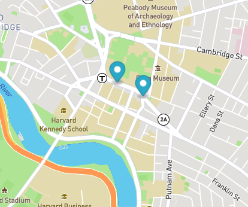
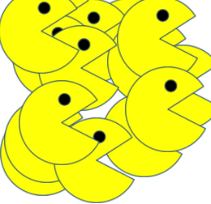
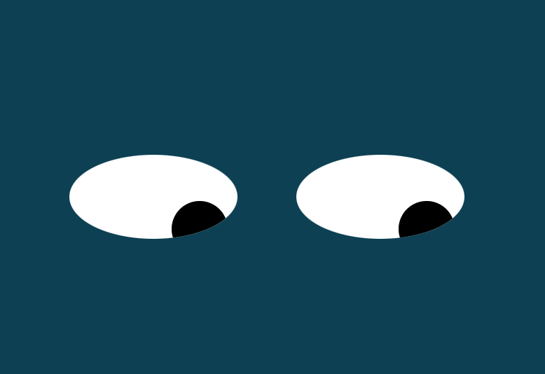

Reatime bus tracker
Using data sourced from the MBTA, this program displays realtime location of buses traveling between Harvard University and MIT.

Pacman factory
This program is a 'pacman factory' in which simulated pacmen emerge from the top left of the webpage. Javascript animation creates the effect of bouncing and chomping.

Googley Eyes
This program tracks the movement of a pair of 'eyes' with JavaScript animation and mouse-movement tracking.